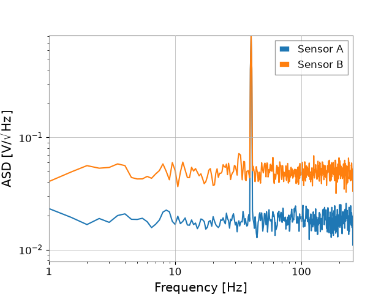

クイックスタート#
2 つの合成チャンネルを作り、振幅スペクトル密度（ASD）を計算して asd.png に保存します。
前提条件は Python 3.11 以降と GWexpy のインストールです。
検出器のファイルや追加パッケージは必要ありません。
学習時間の目安はインストール後約 5 分です。
スクリプトはノート PC で数秒程度の実行を目標としていますが、実測値ではありません。
GWexpy をインストールする#
使用する Python 環境を有効にしたターミナルで、次を実行します。
python -m pip install gwexpy
環境の作成と Conda の手順はインストールを参照してください。
例を通して実行する#
quickstart.py を作業フォルダにダウンロードし、そのフォルダで次のコマンドを実行します。
ターミナルのコマンドが Python を起動し、ダウンロードしたファイル内の Python 文を順に実行します。
python quickstart.py
"""Generate two synthetic channels and save their ASDs to asd.png."""
# quickstart-begin
from gwexpy.noise.wave import gaussian, sine
from gwexpy.timeseries import TimeSeriesDict
settings = dict(duration=16, sample_rate=512, t0=0, unit="V")
tone = sine(frequency=40, **settings)
channels = TimeSeriesDict(
{
"Sensor A": tone + gaussian(std=0.3, seed=10, **settings),
"Sensor B": tone + gaussian(std=0.8, seed=20, **settings),
}
)
spectra = channels.asd(fftlength=2, overlap=1, window="hann", method="welch")
plot = spectra.plot(xlim=(1, 256), ylabel=r"ASD [V/$\sqrt{\mathrm{Hz}}$]")
plot.gca().legend()
plot.savefig("asd.png")
# quickstart-end
sine と gaussian は、長さ 16 秒、サンプルレート 512 Hz、開始時刻、単位 V が共通の TimeSeries を生成します。
明示したシードにより、どちらのノイズ列も再現できます。
TimeSeriesDict は名前を付けた 2 チャンネルをまとめ、.asd() は同じスペクトル設定を各チャンネルに適用します。
最後の行はコマンドを実行したフォルダに図を保存します。
画像ビューアで asd.png を開いてください。
結果を読み取る#
{kind=link}

ダウンロードした例の期待される出力です。 両チャンネルに 40 Hz の線があり、Sensor B の広帯域ノイズフロアが高くなります。#
横軸は周波数（Hz）、縦軸は振幅スペクトル密度（V/√Hz）です。 ASD は変動の振幅が周波数にどのように分布するかを示します。 両チャンネルに同じ 40 Hz の正弦波が含まれ、Sensor B のガウスノイズが大きくなっています。 ピークの高さはスペクトル設定にも依存し、正弦波の振幅を V 単位で直接示す値ではありません。
fftlength=2 は長さ 2 秒の区間を使い、周波数ビンの間隔は 0.5 Hz になります。
overlap=1 は隣り合う区間を 1 秒ずつ重ねます。
この例では、解析条件が分かるように Hann 窓と Welch 平均を明示しています。
パラメータを 1 つ変える#
frequency=40 を frequency=70 に変えてスクリプトを再実行します。
2 つのピークが 70 Hz に移るはずです。
40 Hz に戻してから、片方のノイズの標準偏差（std）を変え、広帯域のフロアがどう変わるか確認します。
スクリプトが動かない場合#
ModuleNotFoundError: No module named 'gwexpy' は、スクリプトを実行している Python が GWexpy を見つけられないことを示します。
インストールした環境を有効にし、python quickstart.py を再実行してください。
その他の症状はトラブルシューティングを参照してください。
さらに読む#
最初の解析：Python の変数、描画、ASD を順に学びます。
はじめに：経験に合った次のレッスンを選びます。
TimeSeries の基礎：時間領域と周波数領域の操作へ進みます。